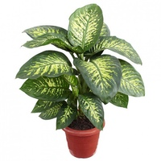
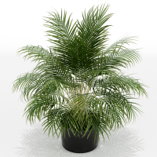
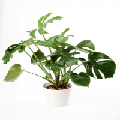
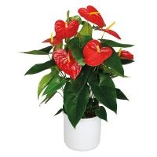
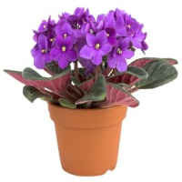
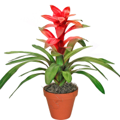
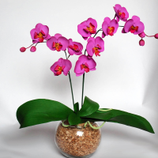
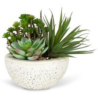

Все о комнатных растениях
Здесь представлена информация о популярных категориях комнатных растений. Для каждой категории представлена информация по уходу и размножению.
Комнатные растения выполняют свою главную функцию: дарят людям радость, помогают им быть здоровее, а значит, лучше трудиться, большего достичь. И люди, и животный мир в отсутствие растений долго жить не способны. Интересно знать, что каждый цвет обладает определенными свойствами: красный — создает впечатление тепла, желтый — бодрит, зеленый — придает свежесть, тишину, белый — успокаивает. Комнатные цветы не только создают уют, но и приносят пользу:
- выделяют кислород;
- они очищают воздух в помещениях от токсических веществ, которые выделяют пластиковые покрытия, лаки, клей, моющие средства, синтетические смолы;
- повышают влажность воздуха;
- убивают бактерии (гибискус, или китайская роза, уже через три недели пребывания в комнате полностью освобождает ее от микробов);
- снижают электромагнитное излучение;
- используются как лекарства (каллизия душистая (золотой ус) является ценным сырьем для лечения многих заболеваний, целебным становится, когда на усах сформируется
по 9 суставчиков);
- являются «синоптиками» (если капельки воды появляются на листьях бальзамина, значит, будет дождь);
-используются в пищу.
Растения – это живой организм, обладающий определенной энергией. У каждого растения есть свой индивидуальный набор свойств и качеств, благодаря которому оно может оказывать влияние на жизнь человека тем или иным способом.
   
   